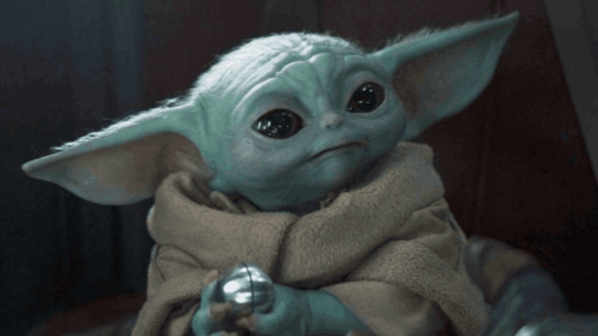

Temporada 2

Episodio 1
Al Mandaloriano se le ha encomendado la tarea de devolver su cargo, el Niño, a su gente, los Jedi. Comienza a buscar a otros mandalorianos que cree que pueden ayudarlo a encontrar a los Jedi,
y se dirige a un rumoreado mandaloriano que opera en la ciudad de Tatooine, Mos Pelgo. Allí se entera de que no hay ningún mandaloriano en Mos Pelgo, ya que en realidad es el marshal Cobb Vanth,
que viste una armadura mandaloriana. Vanth explica que liberó a la ciudad del control del Gremio Minero usando esa armadura, que compro a los jawas en el desierto. La ciudad ahora es atacada con
frecuencia por un dragón krayt. Vanth acepta devolver la armadura mandaloriana a su gente a cambio de ayuda para matar al dragón krayt. El Mandaloriano arregla un acuerdo entre los aldeanos de
Mos Pelgo y un clan local de Tusken Raiders para trabajar juntos y así matar al dragón krayt a cambio de la paz entre los grupos. Atraen al dragón krayt, que finalmente es asesinado por el
Mandaloriano. Que más tarde se retira con la armadura de Vanth, mientras es vigilado por un Boba Fett con cicatrices.
Episodio 2
El Mandaloriano acepta llevar a una Dama Rana y sus huevos de Tatooine a la luna del estuario Trask, donde su esposo fertilizará los huevos, a cambio de información sobre otros mandalorianos.
Debido a la fragilidad de los huevos, deben viajar a velocidades lentas ("subluz"). En su viaje, se enfrenta a pilotos de Ala-X que obligan al Mandaloriano a ir a un planeta helado cercano porque
la Nueva República lo busca por su papel en una fuga de prisión; aterriza en el planeta. Mientras el Mandaloriano arregla el barco, el Niño se topa con numerosos huevos dentro de una cueva de
hielo que se abren para revelar un enjambre de criaturas con forma de araña. El Mandaloriano, el Niño y la Dama Rana están atrapados en el Razor Crest, la nave del Mandaloriano, hasta que los
pilotos del Ala-X los encuentren y maten a las criaturas. Explican que debido a que el Mandaloriano ayudó a detener a sus cómplices de la fuga de la prisión, retirarán la orden de arresto y lo
dejaran con una advertencia. Después de que el Mandaloriano termine las reparaciones, el Razor Crest hecho andrajos despega y reanuda su viaje a Trask.
Episodio 3
En Trask, la Dama Rana se reúne con su esposo, y juntos llevan al Mandaloriano a una posada local donde pueda encontrar información sobre otros mandalorianos. Un pescador quarren ofrece llevar
al Mandaloriano a los demás, pero abordo del barco pesquero, el pescador y sus compañeros atacan al Mandaloriano para vender su armadura. El Mandaloriano y el Niño son rescatados por tres
mandalorianos, liderados por Bo-Katan Kryze. Ella solicita su ayuda para apoderarse de las armas de un carguero imperial a cambio de información sobre los Jedi. Después de abordar el carguero,
Bo-Katan revela que su objetivo principal es capturar el barco junto con las armas para su esfuerzo de guerra por conquistar Mandalore. el capitán imperial recibe instrucciones de Moff Gideon
para estrellar el barco, pero sus esfuerzos son detenidos por Bo-Katan quien le pregunta al capitán sobre el Darksaber, pero este se suicida. Bo-Katan ordena al Mandaloriano que se encuentre
con la jedi Ahsoka Tano en la ciudad de Calodan en el planeta forestal de Corvus. Con el Razor Crest parcialmente reparado, el Mandaloriano y el Niño continúan su viaje.
Episodio 4
El Razor Crest requiere más reparaciones antes de que pueda llegar a Corvus, por lo que el Mandaloriano y el Niño toman un desvío hacia Nevarro, donde se vuelven a unir con sus aliados Cara
Dune y Greef Karga. Mientras se repara el Razor Crest, al Mandaloriano se le muestra cuánto han mejorado las cosas en Nevarro desde la última vez que estuvo allí, bajo la dirección de Karga como
magistrado y de Dune como marshal. El último desafío al que se enfrentan es una base imperial restante en el planeta, y el Mandaloriano acepta ayudarlos a destruirla. Descubren que el Dr.
Pershing está utilizando la base como laboratorio para realizar experimentos con la sangre del Niño, que posee un alto recuento M. Destruyen la base y escapan perseguidos por stormtroopers
en motos deslizadoras y cazas TIE. Dune y Karga logran detener las motos deslizadoras mientras el Mandaloriano destruye a los cazas TIE con el Razor Cresst reparado. El Mandaloriano y el Niño
se van de Corvus, sin saber que un espía imperial ha colocado un rastreador en el Razor Crest para Moff Gideon.
Episodio 5
El Mandaloriano y el Niño llegan a la ciudad de Calodan en el planeta Corvus para encontrar a la población que vive atemorizada por el magistrado de la ciudad, Morgan Elsbeth, y sus guardias,
incluido un mercenario contratado llamado Lang. Elsbeth se ofrece a darle al Mandaloriano una lanza de acero beskar a cambio de matar a Ahsoka. El Mandaloriano encuentra a Ahsoka fuera de la
ciudad y le presenta al niño. Usando la Fuerza, Ahsoka determina que el nombre del niño es Grogu y que habia comenzado a entrenarse como Jedi antes del surgimiento del Imperio. Ella acepta
continuar con su entrenamiento si el Mandaloriano la ayuda a derrotar a Elsbeth. Ellos dominan a los guardias, liberan a los ciudadanos y el Mandaloriano mata a Lang. Ahsoka se enfrenta a Elsbeth
y exige saber el paradero de su maestro, el gran almirante Thrawn. Posteriormente, Ahsoka se niega a entrenar a Grogu debido a su estrecho vinculo con el Mandaloriano. En cambio, los dirige a un
templo antiguo en el planeta Tython donde Grogu puede usar la Fuerza para encontra a los otros Jedi y decidir su propio destino. Ella también le da la lanza al Mandaloriano.
Episodio 6
El Mandaloriano lleva a Grogu al antiguo templo de Tython y lo coloca sobre la piedra que ve en el centro. Grogu medita y es rodeado por un campo de energía protectora. Boba Fett pronto llega
con la mercenaria Fennec Shand, a quien el Mandaloriano había dejado previamente por muerta en Tatooine. Fett explica que la armadura que llevaba Cobb Vanth le pertenece, ya que su padre Jango
era un expóstio mandaloriano. El Mandaloriano acepta devolver la armadura a cambio de la seguridad de Grogu, justo cuando Moff Gideon llega y despliega stormtroopers. Fett, Fennec y el
Mandaloriano repelen el ataque de los stormtroopers, tiempo durante el cual Grogu termina de meditar y el campo de energía a su alrededor desaparece. Gideon destruye el Razor Crest desde la
órbita antes de desplegar a sus droides Dark Troopers, que logran capturar a Grogu. Para honrar su trato, Fett y Fennec prometen ayudar al Mandaloriano a recuperar a Grogu. Viajan en la nave de
Fett, el Slave I a Nevarr, y le piden ayuda a Dune para sacar al criminal Migs Mayfeld de la prisión de la Nueva República.
Episodio 7
Dune usa sus nuevas credenciales como marshal de la Nueva República para transferir a Mayfeld, un ex imperial, de la prisión a su custodia. Acepta ayudar a localizar el crucero de Moff Gideon,
pero necesita acceso a una terminal interna. Sugiere un centro minero imperial secreto en Morak. Allí, Mayfeld y el Mandaloriano secuestran un transporte que transportaba el mineral explosivo
rhidonio y logran llegar a la instalación minera a pesar de los ataques de los piratas locales. Obtienen las coordenadas de Gideon de la terminal, pero el Mandaloriano se ve obligado a quitarse
el casco frente a los demás por primera vez desde que hizo su juramento mandaloriano. La pareja se enfrenta al antiguo comandante imperial de Mayfeld, a quien Mayfeld mata cuando se regodea de
las atrocidades cometidas por el Imperio en la Operación Ceniza. Mayfeld y el Mandaloriano escapan con la ayuda de Fennec, Dune y Fett. Dune decide dejar ir a Mayfeld. El Mandaloriano envía a
Gideon una advertencia por transmisión de vendrá por Grogu, parafraseando un discurso similar que Gideon había dado anteriormente.
Episodio 8
El Mandaloriano y Dune abordan una lanzadera imperial y capturan al Dr. Pershing. Piden la ayuda de Bo-Katan y Koska Reeves para rescatar a Grogu; a cambio, Bo-Katan recibe el crucero de
Gideon y el Sable Oscuro, y el Mandaloriano considerara ayudarlos a liberar Mandalore. Ellos usan la lanzadera para llegar lo suficientemente del crucero de Gideon, mientras Fett pretende atacar
en el Slave I. Bo-Katan, Koska, Fennec y Dune luchan a través de la nave contra los Stormtroopers hasta el puente del crucero. Mientras tanto, el Mandaloriano encuentra a los Dark Troopers,
apenas derrotan a uno de ellos con la lanza de Beskar y lanza al resto al espacio exterior. Posteriormente lucha contra Gideon, este ultimo armado con el Sable Oscuro, pero Mando con su lanza de
Beskar, consigue desarmar al Moff y derrotarlo en combate, lo que automáticamente lo convierte en el nuevo propietario legítimo del Sable Oscuro. Después del enfrentamiento, el Mandaloriano lleva
al Moff Gideon al puente donde se encuentra Bo-Katan y el resto de los demás, ahora con el Sable Oscuro en su poder, en eso trata de ofrecerle el Sable Oscuro a Bo-Katan, pero Gideon le menciona
que ella no puede aceptarlo, ya que para que pueda tomar posesión del mismo, ella tiene que vencerlo en combate, por lo que Bo-Katan admite que Gideon tiene razón y decide no aceptar el Sable
Oscuro, pero Mando le insiste de que por favor lo tome, pero Bo-Katan sigue negándose. Mientras tanto el grupo de Dark Troopers que Mando lanzo al espacio exterior previamente consiguen regresar
a la nave y rápidamente estos se dirigen al puente de mando para asesinarlos a todos, donde rápidamente los Dark Troopers comienzan a golpear y forzar la puerta de entrada al puente, pero justo
cuando toda la esperanza estaba perdida, un misterioso X-Wing se aparece en el sistema, donde Bo-Katan trata de pedirle al piloto que se identifique, sin embargo el piloto del mismo X-Wing no
responde. Súbitamente los Dark Troopers que estaban intentando forzar la puerta del puente de mando se detienen y se colocan en formación de defensa. Al no entender por que los mismos se
detuvieron así de repente, Bo-Katan revisa las cámaras de seguridad del crucero para averiguar que sucede y descubre que el piloto del X-Wing que apareció previamente resulta ser nada mas y nada
menos que el maestro Jedi, Luke Skywalker, el cual destruye a todos los Dark Troopers en su camino con suma facilidad, usando su sable de luz de color verde esmeralda, hasta llegar al puente de
mando, pero en medio de esto Moff Gideon observa una de las pantallas del puente y al descubrir como sus creaciones son destruidas fácilmente y darse cuenta de que el que esta destruyendo a los
Dark Troopers es el mismísimo maestro Jedi Luke Skywalker, rápidamente Moff Gideon entra en pánico y trata de matar a Bo-Katan, como también al niño Grogu con un blaster que tenia oculto, sin
embargo el Mandaloriano, salta y protege al niño con su armadura de Beskar de los disparos, salvándolo de una muerte segura, mientras que Bo-Katan sobrevive a los disparos por su armadura
mandaloriana, rápidamente Fennec, Koska y Cara Dune apuntan con sus blasters al Moff Gideon y le exigen que suelte el blaster, pero Gideon totalmente rodeado intenta dispararse a si mismo con el
blaster en la cabeza, pero es detenido y noqueado por Cara. Finalmente Luke llega hasta la puerta del puente tras acabar con todos los Dark Troopers, donde el Mandaloriano les exige a Fennec y
los demás de dejar entrar al maestro Jedi, cosa que en un principio Fennec no esta muy de acuerdo con dejar entrar a Luke, pero el Mandaloriano decide insistir y abre las puertas, dejando que
Luke entre al puente de mando del crucero, donde este ultimo le menciona al Mandaloriano que el niño Grogu quiere el permiso del Mandaloriano para ir con Skywalker y R2-D2 para completar su
entrenamiento, en un principio Mando no quería dejar ir al niño Grogu, pero después comprende que estará mas protegido bajo la tutela de Luke y le promete al niño volver a verse en el futuro,
pero antes de despedirse, Grogu le pide a Mando quitarse el casco para ver su verdadero rostro antes de irse y en medio de las lagrimas, Mando deja que Luke se lleve a Grogu y tambien el Luke les
desea a todos presentes en el puente de mando que la Fuerza los acompañe y se retira. En una escena post-créditos, Boba Fett y Fennec llegan hasta el Palacio del fallecido Jabba el Hutt en el
planeta Tatooine, donde rápidamente Boba asesina al anterior propietario, Bib Fortuna y reclama el trono del Palacio de Jabba como suyo, junto con su nueva mano derecha, Fennec Shand.